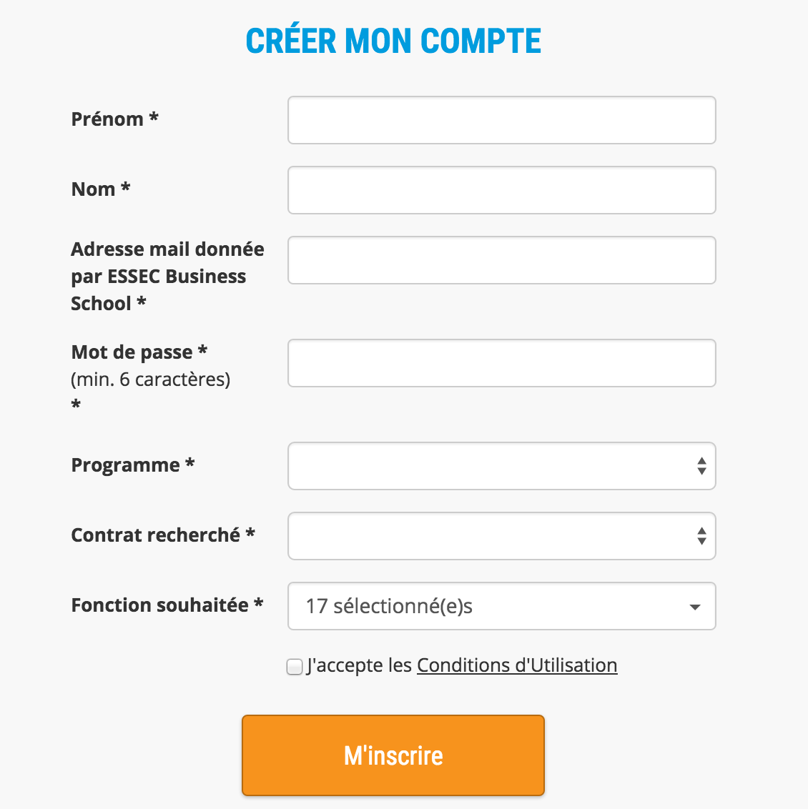
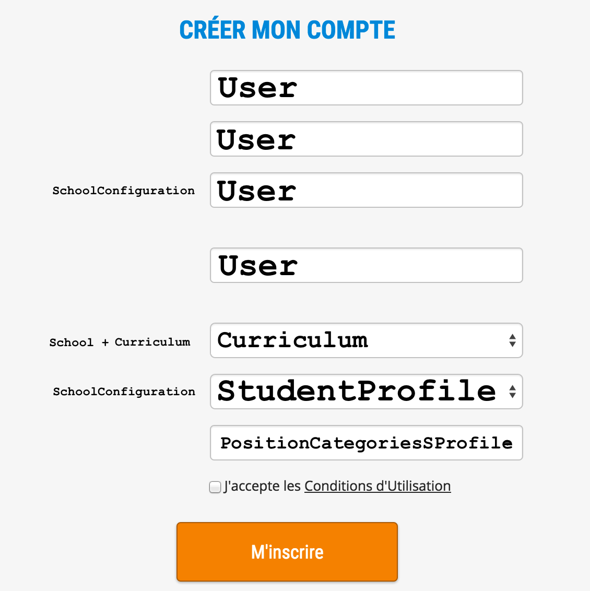
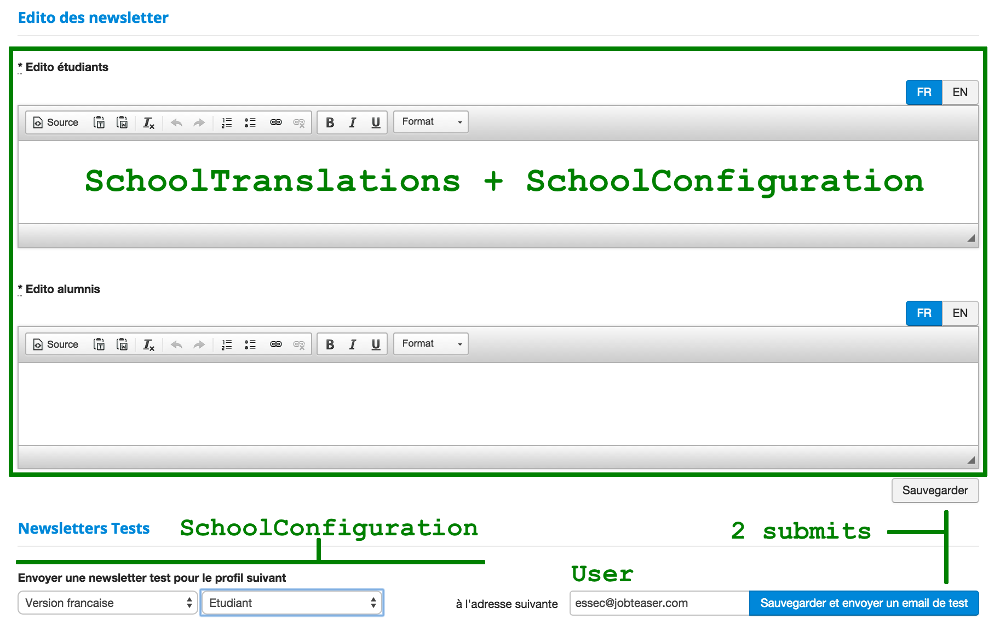

<!doctype html>
<html lang="en">

  <head>
    <meta charset="utf-8">

    <title>Presenters and Form Objects</title>

    <meta name="apple-mobile-web-app-capable" content="yes" />
    <meta name="apple-mobile-web-app-status-bar-style" content="black-translucent" />

    <meta name="viewport" content="width=device-width, initial-scale=1.0, maximum-scale=1.0, user-scalable=no">

    <link rel="stylesheet" href="lib/reveal.js/css/reveal.min.css">
    <link rel="stylesheet" href="lib/reveal.js/css/theme/night.css">
    <link rel="stylesheet" href="lib/template.css">

    <!-- For syntax highlighting -->
    <link rel="stylesheet" href="lib/reveal.js/lib/css/zenburn.css">

    <!-- If the query includes 'print-pdf', include the PDF print sheet -->
    <script>
      if( window.location.search.match( /print-pdf/gi ) ) {
        var link = document.createElement( 'link' );
        link.rel = 'stylesheet';
        link.type = 'text/css';
        link.href = 'css/print/pdf.css';
        document.getElementsByTagName( 'head' )[0].appendChild( link );
      }
    </script>

    <style>
      .reveal img {
        border: 2px solid red;
        max-height: 600px;
      }
    </style>

    <!--[if lt IE 9]>
    <script src="lib/reveal.js/lib/js/html5shiv.js"></script>
    <![endif]-->
  </head>

  <body>
    <div class="reveal">
      <div class="slides" id="content">
        <section data-markdown
                 data-separator="==="
                 data-vertical="---"><script type="text/template">

# Form Objects

===

## The underlying dichotomy

 * ActiveRecord models bound to the database schema

 * Forms bound to product stories

===



---



===

## Issues

---

### Complex logic and nested forms in views

```haml
= f.simple_form_for :student_profile do |f|
  = f.simple_fields_for :user do |uf|
    -# [...]

  = f.input :curriculum_ids, collection: @curriculums
```

---

### Code duplication in controllers

```ruby
# in new and create if submit failed
@student_profile = StudentProfile.new
StudentProfile.build_user
@student_profile.school = current_school
@curriculums = current_school.curriculums
```

---

### Persisting issues

* custom logic in controller

* `accept_nested_attributes` chains

* virtual attributes handling (terms)

```

===

## Form objects

* PORO

* Presenter + Virtual Model

* Testable

===

## The goal

---

### Speaks like a model in the controller

```ruby
# controller
def new
  @signup_form = SignupForm.new(current_school)
end

def create
  @signup_form = SignupForm.new(current_school)
  @signup_form.attributes = params[:signup_form]
  if @signup_form.save
    redirect_to dashboard_path
  else
    render :new
  end
end
```

---

### Speaks like a model in the view

```haml
-# View
= simple_form_for :signup_form do |f|
  = f.input :email
  = f.input :first_name
  = f.input :last_name
  = f.input :job_search_type, collection: @signup_form.job_search_types
  = f.input :curriculum, collection: @signup_form.curriculums
  = f.input :position_category_ids, as: :multiselect
```

---

### Encapsulate form-specific view logic

```ruby
class SignupForm
  def curriculums
    @current_school.curriculums.where(active: true).map{|c| [c.name, c.id]}
  end
end
```

---

### Encapsulate complex persisting logic

```ruby
class SignupForm
  def save
    user = User.new(
      email: @email,
      first_name: @first_name,
      last_name: @last_name,
      unique_key: unique_key
    )

    student_profile = StudentProfile.new(user: user, job_search_type: @job_search_type)

    return false unless user.valid? && student_profile.valid?

    user.save && student_profile.save

    student_profile.position_categories = PositionCategory.find(@position_category_ids)
  end
end
```

===

## Implementation

---

### Form prerequisites

```ruby
class SignupForm
  extend ActiveModel::Naming
  include ActiveModel::Conversion

  attr_reader :email,
              :first_name,
              :last_name,
              :job_search_type,
              :curriculums,
              :position_category_ids

  def persisted?
    false
  end

  # [...]
end
```

---

### Controller prerequisites

```ruby
class SignupForm
  # [...]

  def initialize(config)
    # ...
  end

  def attributes=(attrs)
    attrs.each{ |name, value| self.instance_variable_set(:"@#{name}", value) }
  end

  def save
    # Logic goes here
  end
end
```

---

### Why it's awesome

* The form definition is flattened

* Form fields are automatically populated on failed submits

* Only one definition in the controller

* Custom "persisting" logic

===

## Sample

---



---

### Fields

* email
* language
* student_kind
* localized_laius_student
* localized_laius_alumni

---

### Setup

```ruby
class NewsletterForm
  def initialize(school, current_user = nil)
    @school = school
    @email = current_user.try(:email)
    @language = available_languages.first
    @student_kind = available_student_kinds.first
  end
end
```

---

### Helpers for available options in select

```ruby
# Which languages are available for the content of the newsletter
def available_languages
  languages = ['fr']
  languages += ['en-only', 'en-all'] if configuration.has_english_module
  languages
end

# Which student types are available for the content of the newsletter
def available_student_kinds
  student_kinds = [:student]
  if school.configuration.has_alumni
    student_kinds << :alumni
  end
  student_kinds
end
```

---

### Update form object attributes

```ruby
def attributes=(params)
  @email = params[:email]

  if params[:language]
    @language = params[:language]
  end

  if params[:student_kind]
    @student_kind = params[:student_kind].to_sym
  end

  school.localized_laius_student = params[:localized_laius_student]

  if params[:localized_laius_alumni]
    school.localized_laius_alumni = params[:localized_laius_alumni]
  end
end
```

---

### Custom persisting logic

```ruby
def send!
  # From the language, determine the newsletter locales
  locales = case language
  when 'fr'
    [:fr, :en]
  when 'en-only'
    [:en]
  when 'en-all'
    [:en, :fr]
  else
    raise ArgumentError, "Invalid language parameter for test newsletter : #{language}"
  end

  # Handle when no email present
  if email.nil?
    raise ArgumentError, "Please specify an email in order to send the test newsletter"
  end

  # Send the test email
  StudentMailer.news_recap_test(
    school,
    to: email,
    locales: locales,
    alumni: (student_kind == :alumni)
  ).deliver
end
```

---

### Cleaner controller

```ruby
class Backend::NewsletterLaiusesController < Backend::BaseController
  def new
    # [...]
    @newsletter = NewsletterForm.new(@school, current_user)
  end

  # Updates the laius, sends a test email if need be
  def create
    @newsletter = NewsletterForm.new(@school, current_user)
    @newsletter.attributes = params[:newsletter_form]
    @newsletter.save! # Persist the laiuses

    if params[:save_and_send_email]
      mail = @newsletter.send!

      if mail.nil?
        flash.now[:error] = "No email sent"
      else
        flash.now[:notice] = "Email successfully sent"
      end
    else
      flash.now[:notice] = "Laiuses updated"
    end

    render :new
  end
end
```

---

### Cleaner View

```
= simple_form_for @newsletter, url: backend_newsletter_laiuses_path, method: :post do |f|
  = f.input :laius_student, as: :localized

  - if @newsletter.available_student_kinds.include? :alumni
    = f.input :laius_alumni, as: :localized

  = f.input_field :language, collection: @newsletter.available_languages
  = f.input_field :student_kind, collection: @newsletter.available_student_kinds

  = f.submit name: 'save'

  = f.input :email
  = f.submit name: 'save_and_send_email'
```

===

## Misc

* [Code Climate article](http://blog.codeclimate.com/blog/2012/10/17/7-ways-to-decompose-fat-activerecord-models/)

* [apotonick/reform](https://github.com/apotonick/reform)

* Error handling by extending `ActiveModel::Errors`

  * Proxy models errors

  * Add custom ones

* Service Objects for complex and shared persisting logic

        </script></section>

      </div>

    </div>

    <script src="lib/reveal.js/lib/js/head.min.js"></script>
    <script src="lib/reveal.js/js/reveal.min.js"></script>
    <script src="lib/jquery/dist/jquery.min.js"></script>
    <script src="config.js"></script>

  </body>
</html>
